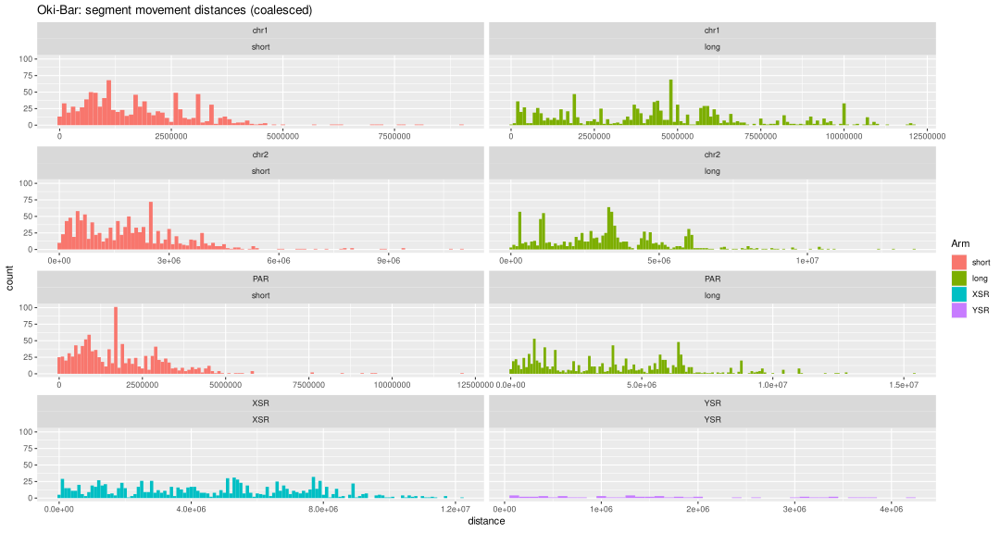

Segment movement distances
Michael Mansfield
Charles Plessy
09 February, 2022
Source:vignettes/SegmentMovements.Rmd
SegmentMovements.RmdLoad packages and data
See the vignette("OikScrambling", package = "OikScrambling") for general details on package and data load.
See vignette("LoadGenomicBreaks", package = "OikScrambling") for how the different GBreaks objects are prepared.
suppressPackageStartupMessages({
library('GenomicBreaks')
library('ggplot2')
library("BreakpointsData")
})
load("BreakPoints.Rdata")Segment movement distances
Whenever a collinear segment moves between species, if the homologous segment is located on an equivalent chromosome, a distance can be calculated.
# Find distance between two equivalent GRanges.
# Input: a GBreaks object
# Output: Absolute distance between the target and query ranges based on some metric ("start", "end", or "midpoint")
GBreaksDist <- function(gb, distMetric=c("midpoint", "start", "end")) {
distMetric <- match.arg(distMetric)
distFun <- switch(distMetric,
start = start,
end = end,
midpoint = \(gr) gr |> resize(1, fix = "center") |> start() )
abs(distFun(gb) - distFun(gb$query))
}
filterSyntenicPairs <- function(gb, chromosomePairing) {
syntenic_pairs <- paste(chromosomePairing[["sp1"]], chromosomePairing[["sp2"]], sep = "_")
is_syntenic <- paste(seqnames(gb), seqnames(gb$query), sep = "_") %in% syntenic_pairs
gb[is_syntenic]
}
chromDist <- function(gb, chromosomePairing=NULL, distMetric="midpoint"){
# Subset to include only ranges in which all chrom in sp1 are paired to their equivalent in sp2
# Note that a similar function could be used to compare the identity of chromosome arms
gb <- filterSyntenicPairs(gb, chromosomePairing)
# Now that the GRanges are only on equivalent chromosomes, calculate the distances between them.
# This can be "start", "end", or "midpoint" distance.
gb$distance <- GBreaksDist(gb, distMetric=distMetric)
gb
}
# Unfortunately, the use of upper and lower case in chromosome names was not
# standardised when assembling the genomes.
synPairs <- SimpleList()
synPairs$chr_Chr <- list("sp1"=c("chr1", "chr2", "PAR", "XSR", "YSR"),
"sp2"=c("Chr1", "Chr2", "PAR", "XSR", "YSR"))
synPairs$Chr_Chr <- list("sp1"=c("Chr1", "Chr2", "PAR", "XSR", "YSR"),
"sp2"=c("Chr1", "Chr2", "PAR", "XSR", "YSR"))
segDists <- SimpleList()
segDists$Oki_Osa <- chromDist(gbs$Oki_Osa, synPairs$chr_Chr)
segDists$Oki_Bar <- chromDist(gbs$Oki_Bar, synPairs$chr_Chr)
segDists$Osa_Bar <- chromDist(gbs$Osa_Bar, synPairs$Chr_Chr)Plotting segment movement distances
plotSegDists <- function(segDist, facet.by='seqnames~Arm', binWidth=100000) {
ggplot(as.data.frame(segDist)) +
aes(x=distance, fill = Arm) +
geom_histogram(binwidth = binWidth) +
facet_wrap(facet.by, scales="free_x", ncol=2)
}
plotSegDists(segDists$Oki_Osa, facet.by='seqnames~Arm', binWidth=100000) + ggtitle("Oki-Osa: segment movement distances (uncoalesced)")
plotSegDists(segDists$Oki_Bar, facet.by='seqnames~Arm', binWidth=100000) + ggtitle("Oki-Bar: segment movement distances (uncoalesced)")
plotSegDists(segDists$Osa_Bar, facet.by='seqnames~Arm', binWidth=100000) + ggtitle("Osa-Bar: segment movement distances (uncoalesced)")
Segment movement distances (coalesced)
segDistsCoa <- SimpleList()
segDistsCoa$Oki_Osa <- chromDist(coa$Oki_Osa, synPairs$chr_Chr)
segDistsCoa$Oki_Bar <- chromDist(coa$Oki_Bar, synPairs$chr_Chr)
segDistsCoa$Osa_Bar <- chromDist(coa$Osa_Bar, synPairs$Chr_Chr)
plotSegDists(segDistsCoa$Oki_Osa, facet.by='seqnames~Arm', binWidth=100000) + ggtitle("Oki-Osa: segment movement distances (coalesced)")
plotSegDists(segDistsCoa$Oki_Bar, facet.by='seqnames~Arm', binWidth=100000) + ggtitle("Oki-Bar: segment movement distances (coalesced)")
plotSegDists(segDistsCoa$Osa_Bar, facet.by='seqnames~Arm', binWidth=100000) + ggtitle("Osa-Bar: segment movement distances (coalesced)")
Plotting segment movements relative to coordinates
Uses, start coordinate as a proxy for midpoint, but the difference should be hardly perceptible.
plot_movement_distance_on_coords <- \(gb) gb |>
as.data.frame() |>
ggplot() +
aes(start, distance, col=Arm) +
geom_point() +
xlab("Start on target") +
ylab("Distance between midpoints on query and target") +
facet_wrap(~seqnames)
segDists$Oki_Osa |> plot_movement_distance_on_coords() + ggtitle("Oki - Osa")
segDists$Oki_Bar |> plot_movement_distance_on_coords() + ggtitle("Oki - Bar")
segDists$Osa_Bar |> plot_movement_distance_on_coords() + ggtitle("Osa - Bar")
Plotting distance between query ranges relative to target coordinates
This assumes that the center an unaligned region would be plotted on the same pixel as the center of its flanking aligned regions.
plot_distance_to_next_query_on_coords <- \(gb) gb |>
dist2next() |>
as.data.frame() |>
ggplot() +
aes(end + 1, qdist, col=Arm) +
geom_point() +
xlab("Start unaligned region on target") +
ylab("Distance between flanking regions on query") +
facet_wrap(~seqnames)
segDists$Oki_Osa |> plot_distance_to_next_query_on_coords() + ggtitle("Oki - Osa")## Warning: Removed 4 rows containing missing values (geom_point).
segDists$Oki_Bar |> plot_distance_to_next_query_on_coords() + ggtitle("Oki - Bar")## Warning: Removed 4 rows containing missing values (geom_point).
segDists$Osa_Bar |> plot_distance_to_next_query_on_coords() + ggtitle("Osa - Bar")## Warning: Removed 4 rows containing missing values (geom_point).
Session information
## R version 4.1.2 (2021-11-01)
## Platform: x86_64-pc-linux-gnu (64-bit)
## Running under: Debian GNU/Linux bookworm/sid
##
## Matrix products: default
## BLAS: /usr/lib/x86_64-linux-gnu/blas/libblas.so.3.10.0
## LAPACK: /usr/lib/x86_64-linux-gnu/lapack/liblapack.so.3.10.0
##
## locale:
## [1] LC_CTYPE=en_GB.UTF-8 LC_NUMERIC=C
## [3] LC_TIME=en_GB.UTF-8 LC_COLLATE=en_GB.UTF-8
## [5] LC_MONETARY=en_GB.UTF-8 LC_MESSAGES=en_GB.UTF-8
## [7] LC_PAPER=en_GB.UTF-8 LC_NAME=C
## [9] LC_ADDRESS=C LC_TELEPHONE=C
## [11] LC_MEASUREMENT=en_GB.UTF-8 LC_IDENTIFICATION=C
##
## attached base packages:
## [1] stats4 stats graphics grDevices utils datasets methods
## [8] base
##
## other attached packages:
## [1] BreakpointsData_3.8.0 ggplot2_3.3.5 GenomicBreaks_0.12.2
## [4] GenomicRanges_1.46.1 GenomeInfoDb_1.30.0 IRanges_2.28.0
## [7] S4Vectors_0.32.3 BiocGenerics_0.40.0
##
## loaded via a namespace (and not attached):
## [1] backports_1.4.1 Hmisc_4.6-0
## [3] systemfonts_1.0.3 plyr_1.8.6
## [5] splines_4.1.2 BiocParallel_1.28.3
## [7] digest_0.6.29 htmltools_0.5.2
## [9] tiff_0.1-10 GO.db_3.14.0
## [11] gdata_2.18.0 fansi_0.5.0
## [13] magrittr_2.0.1 checkmate_2.0.0
## [15] memoise_2.0.1 cluster_2.1.2
## [17] tzdb_0.2.0 Biostrings_2.62.0
## [19] readr_2.1.1 annotate_1.72.0
## [21] matrixStats_0.61.0 R.utils_2.11.0
## [23] pkgdown_2.0.1 jpeg_0.1-9
## [25] colorspace_2.0-2 blob_1.2.2
## [27] textshaping_0.3.6 xfun_0.29
## [29] dplyr_1.0.7 crayon_1.4.2
## [31] RCurl_1.98-1.5 jsonlite_1.7.2
## [33] lme4_1.1-27.1 survival_3.2-13
## [35] glue_1.6.0 gtable_0.3.0
## [37] zlibbioc_1.40.0 XVector_0.34.0
## [39] DelayedArray_0.20.0 weights_1.0.4
## [41] abind_1.4-5 scales_1.1.1
## [43] DBI_1.1.2 Rcpp_1.0.7
## [45] plotrix_3.8-2 genoPlotR_0.8.11
## [47] xtable_1.8-4 htmlTable_2.3.0
## [49] foreign_0.8-81 bit_4.0.4
## [51] Formula_1.2-4 htmlwidgets_1.5.4
## [53] httr_1.4.2 RColorBrewer_1.1-2
## [55] ellipsis_0.3.2 mice_3.14.0
## [57] farver_2.1.0 pkgconfig_2.0.3
## [59] XML_3.99-0.8 R.methodsS3_1.8.1
## [61] nnet_7.3-16 sass_0.4.0
## [63] locfit_1.5-9.4 utf8_1.2.2
## [65] labeling_0.4.2 tidyselect_1.1.1
## [67] rlang_0.4.12 reshape2_1.4.4
## [69] AnnotationDbi_1.56.2 munsell_0.5.0
## [71] tools_4.1.2 cachem_1.0.6
## [73] generics_0.1.1 RSQLite_2.2.9
## [75] ade4_1.7-18 broom_0.7.10
## [77] evaluate_0.14 stringr_1.4.0
## [79] fastmap_1.1.0 fftwtools_0.9-11
## [81] yaml_2.2.1 ragg_1.2.1
## [83] knitr_1.37 bit64_4.0.5
## [85] fs_1.5.2 purrr_0.3.4
## [87] heatmaps_1.18.0 KEGGREST_1.34.0
## [89] nlme_3.1-153 R.oo_1.24.0
## [91] poweRlaw_0.70.6 pracma_2.3.6
## [93] compiler_4.1.2 rstudioapi_0.13
## [95] png_0.1-7 tibble_3.1.6
## [97] bslib_0.3.1 stringi_1.7.6
## [99] highr_0.9 desc_1.4.0
## [101] lattice_0.20-45 CNEr_1.30.0
## [103] Matrix_1.4-0 nloptr_1.2.2.3
## [105] vctrs_0.3.8 pillar_1.6.4
## [107] lifecycle_1.0.1 jquerylib_0.1.4
## [109] data.table_1.14.2 bitops_1.0-7
## [111] rtracklayer_1.54.0 R6_2.5.1
## [113] BiocIO_1.4.0 latticeExtra_0.6-29
## [115] KernSmooth_2.23-20 gridExtra_2.3
## [117] boot_1.3-28 MASS_7.3-54
## [119] gtools_3.9.2 assertthat_0.2.1
## [121] SummarizedExperiment_1.24.0 rprojroot_2.0.2
## [123] rjson_0.2.20 withr_2.4.3
## [125] GenomicAlignments_1.30.0 Rsamtools_2.10.0
## [127] GenomeInfoDbData_1.2.7 parallel_4.1.2
## [129] hms_1.1.1 EBImage_4.36.0
## [131] grid_4.1.2 rpart_4.1-15
## [133] minqa_1.2.4 tidyr_1.1.4
## [135] rmarkdown_2.11 MatrixGenerics_1.6.0
## [137] Biobase_2.54.0 base64enc_0.1-3
## [139] restfulr_0.0.13